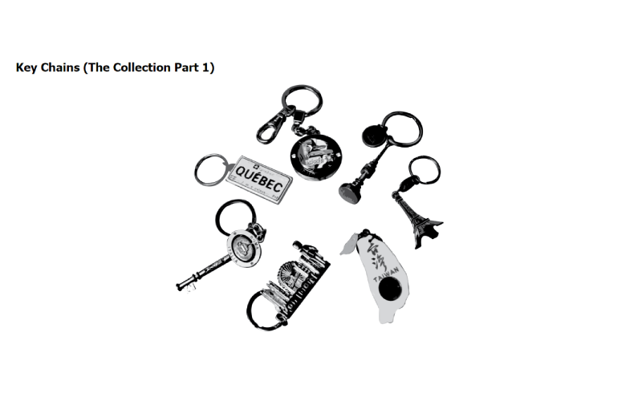
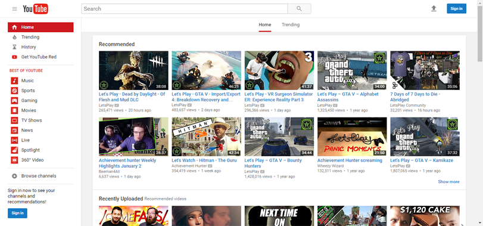

Blog: Feb 7th
FOr my studio three, I wanted to do a hover over a collection of key chains
I own. In this code I want to hover over a image of the key chains where one
that is selected is highlighted by a color or by its original color. To do
this I needed to make two separate images, one I would considered a background
and one that is being revealed and hidden while hovered. I called a variable for
one of those standalone image and gave it a function. I did this to each and
everyone key chain to create this affect. The next step that linked this studio's
visuals together as the popup message. What I wanted to do was to create this
message or blurb that appears or pops up when the key chain is hovered over. To
do this I would have to create or add to the same functions I did before in my JS
and have it alternate the opacity when hovered over or out of using a mouse function.
What I feel makes this tied in together is the use of color and the effective use of
color. Since the original image is in greyscale, it creates this interative sense to
move over the image, although color has nothing heavy to do with the code it plays
an important role in visuals. I believe with the affect use of color, and the hidden,
and opacity functions with the mouse makes this studio fairly enjoyable.

Blog: Jan 31st
A website or such I use a lot lately is Google Drive, or the
service of Google Drive. As a student, club lead, and other stuff
in relation with class work, I depend heavily on the drive. The almost
infinite storage really helps with with files that can be bigger than
normal or just multiple files we end up by the end of a day of class.
The layout of the drive is quick simple and follows their graphic standard
which is displayed in all of Googles apps, such as mail, forms, and so on.
The drive focuses on orgnization, heping the user make things more easier
to catergoize of to be found. With the traditional side bar to the left to
help direct to other facities on the drive has to ofter. They also hav a
top riht bar but it is normally used to connect to your profile or settings
and the other applications that relate to google. The drive design isn't busy,
it's more so clean and simple to make the folders or flyers easy to find, and
then those folders are broken up to sub folders and so on. The organization in
their design makes this website work well in both graphically and effective in use.

Blog: Jan 12th
The user interface I decided to evaluate is "Youtube".
Youtube is a commonly used website for everyone, the audience
that uses the website varies in both ages and gender depending
on what you watch. Over the years Youtube has changed their interface
ever so slightly adding little things such as more navigational
bars to make search or accessing videos or your account more
easier. At first glance the website will take what you have
been watching and put recommendations at the top of the page
based off of videos you have watched beforehand. It also has
it's own individual sections of videos depending on the Youtuber
you are following, the types of videos you watch, and what would
be trending at the time, though there are many more sections.
It's navigational bar stays on the left side of the screen in
possibly absolute potion, allowing the other content to be
scrolled around while the navigational bar stays with you.
The also include a search engine bar to search for videos of
your choosing. Youtube appeals to many people by it's interface
(though some not fond of now), and clear and easy to see text
and options to get to the video you want right away.
